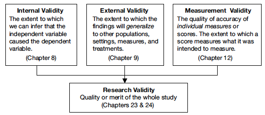
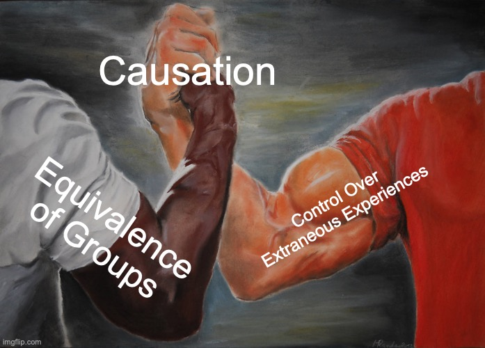
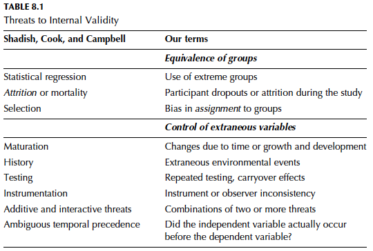
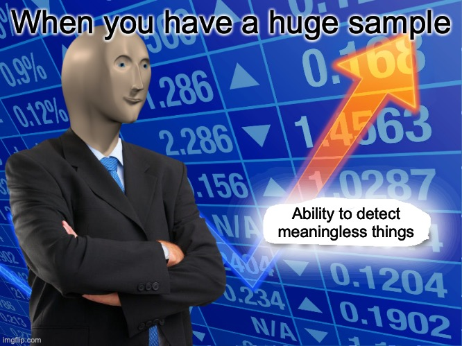
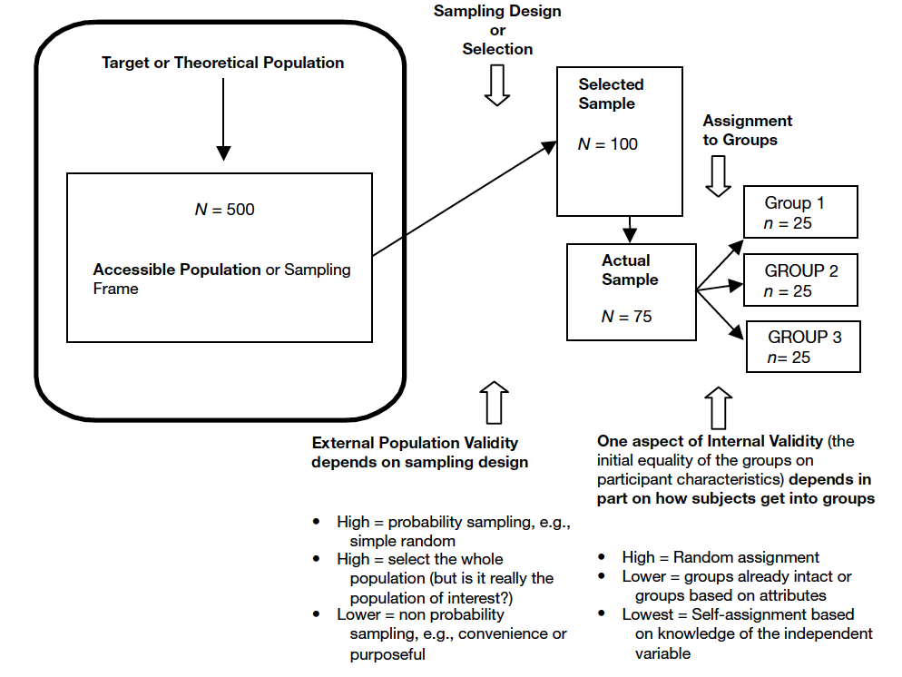
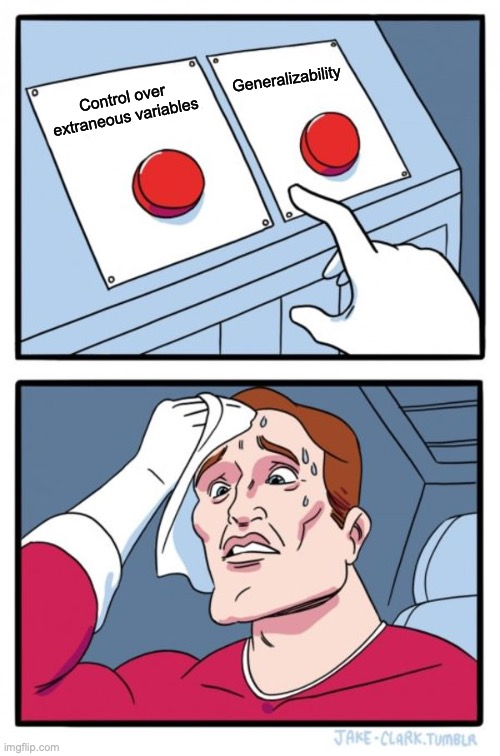

Week 4: Who are you studying?
Associate Professor | School of Information Science
Overview
- BRIEF review
- Internal Validity
- External Validity
- Discussion: Sampling!
- Workshop: Navigating the IRB
- Understanding the online process
- Submitting your protocols
- Responding to feedback
Old Content: Review!
Quantitative Research
What is the PURPOSE of Quantitative Research?
Quantitative research:
- Is systematic. It is intentional, replicable, and valid.
- Observes, explains, and predicts
- Tests theories that describe human behavior
- Answers questions of group differences or variable relationships
What are the STEPS in Quantitative Research?
- Isolate a problem
- Select a design
- Operationalize variables
- Generate a sample
- Collect data
- Analyze data
- Write results
What are the characteristics of a good research problem?
Good research problems are grounded in empirical and theoretical literature, stated clearly, testable, feasible, and of vital interest to you:
- Simple
- Observable
- Testable
- Theoretically and Practically Important
Key Terms
What is the difference between a conceptual definition and an operational definition?
These are not interchangeable
- Concept (Theoretical concept) - a mental representation (more abstract than a construct)
- Construct - a set of operational measures that allow for the study of a theoretical concept (less abstract than a concept)
What is the difference between an independent and a dependent variable?
“variables thought to influence changes in another variable (the dependent variable).”
Known as the IV (sometimes called explanatory variable or PREDICTOR variable in non-experimental research)
When more than two independent variables are used in a “factorial design” the IVs are referred to as factors.
“variables are thought to be changed by another variable (the independent variable).”
Know as the DV (sometimes called outcome variable or CRITERION variable in non-experimental research)
What is the difference between a research question and a research hypothesis?
“a formal question posed to guide research.”
The explicit questions researchers ask about the variables that interest them.
When researchers feel confident enough to make a prediction, they advance a hypothesis
“a tentative statement about the relationship between independent and dependent variable(s).”

Descriptive stats will be covered in Weeks 6-8!
- Frequency Distributions
- Central Tendency
- Measures of Dispersion
- Standard Scores
The statistic that you ultimately employ should correspond with the RQ/Hypothesis:
Research Tips
- Plan your project carefully
- Think ahead
- Get organized
- Keep good records
- Stay calm! (Do not tolerate confusion)
- Give yourself plenty of time
GML Chapter 8
Contents
- Criteria for establishing causation
- Characteristics for evaluating internal validity
- Threats to internal validity
What is Internal Validity?
Internal validity is the extent to which we can infer that that IV caused the change in the DV.
Internal validity depends on the strength or soundness of the design and influences whether one can conclude that the independent variable or intervention caused the dependent variable to change
Randomized experiments are the most likely to provide evidence that the independent variable caused changes in the dependent variable.
Randomizing individuals into groups maximizes the likelihood that some shared characteristic or attribute is not influencing the IV-DV relationship.
Causal Relationships
In order to infer that one variable caused a change in another:
- The IV must precede the DV
- The IV must be related to the DV
- There must be no other variables that could explain why the IV is related to the DV
Causation in Descriptive Studies
In purely descriptive studies there is no independent variable and no attempt to find relationships (causal or otherwise) between variables so the issue of causal relationships is not relevant.
Causation in Non-Experimental Studies
The quasi-experimental, comparative, and associational approaches all attempt to identify relationships between variables. In published studies, these three approaches usually satisfy the second criterion; the independent variable is related to the dependent variables.
The first criterion, the independent variable precedes the dependent variable, also is often met, especially in quasi-experiments.
The third criterion for causation, ruling out other possible explanations, is never possible in the comparative and associational approaches and is problematic in all but the strongest quasi-experiments.
TL;DR: If you aren’t randomly assigning your participants to conditions, then you have a weak argument for causation.
Evaluating Internal Validity
Internal validity is evaluated based on:
- Equivalence of groups on participant characteristics
- Control of extraneous experiences and environment variables
Equivalence of Groups
Are the groups equivalent in all aspects prior to the induction of the IV?
We ensure this through random assignment
If people cannot be randomly assigned to groups, we can assign the treatment randomly to the people. For ex: assigning classes to specific conditions
Groups being compared by attributes are seldom equivalent to one another.
Can incorporate methods after the study to show some effort at internal validity.
There is only one group! Nothing can demonstrate causation.
Extraneous Experiences
What does random assignment to groups not eliminate?
Do participants learn information about a study as they go?
Are there environmental conditions that might influence participation?
A good study should be high in both areas!
If not, must be cautious about saying that IVs influenced, impacted, or caused DV to change.
Threats to Internal Validity
Threats to Equivalence of Groups
Measurement is often unreliable. Participants who score low on a measure may score higher (closer to the mean) the next time.
Participants drop out for a number of reasons, but it influences group composition.
Problems are created when groups are assigned based on similarities - not randomness.
Threats to Control of Extraneous Variables
- Maturation
- History
- Testing
- Instrumentation
- Interactive Threats
- Ambiguous Temporal Precedence (Time)
Threats RA does NOT eliminate?
- People talk
- Expectation effects (Hawthorne)
- Observer bias
GML Chapter 9
Sampling and External Validity
What is sampling?
Sampling is the process of selecting part of a larger group of participants with the intent of generalizing from the sample (the smaller group) to the population (the larger group).
External validity is the extent to which samples, settings, and variables can be generalized beyond the study.
Why sample?
- Less expensive
- Less time
- Better quality control
Key Concepts
All the participants of theoretical interest to the research and to which he or she would like to generalize.
Also called sampling frame
The group of participants you actually have access to, perhaps through a list or directory.
The smaller group of participants selected from the larger accessible population by the researcher and asked to participate in the study.
The participants that complete the study and whose data are actually used in the data analysis and in the report of the study’s results.
The goal is for our sample to be representative of the target theoretical population.
This maximizes external validity
Sampling Designs
Probability Sampling
Everyone has a known, nonzero change of being chosen
Nonprobability Sampling
No method to estimate probability of being included. Sampling bias automatically becomes an issue.
Probability Samples
- Simple Random Sample
- Systematic Random Sampling
- Stratified Random Sample
- Stratified with Diff Probs of Being Selected
- Cluster (Random) Sampling
All involve randomization at some point!
Nonprobability Samples
- Quota Sampling
- Purposive Sampling
- Purposeful Sampling
- Convenience Sampling
- Snowball Sampling
Why Nonprobability Samples?
- Cost
- Efficiency
- Probability sample maybe not possible
- Sometimes inference is not the goal (causation is)!
When are Samples Unrepresentative?
- When the sampling frame is picked for convenience
- Anytime you use a Nonprobability design
- When you have a poor response rate
- When you experience attrition
Does the NUMBER of people matter?
YES! Very much so.
Larger samples will identify effects that smaller samples will not.
The general rule of thumb is that representativeness is more important than sample size.
A huge sample that is not representative will still be misleading.
Can calculate power to determine an appropriate size.
Evaluating External Validity
A good study should be high in external validity!
If it isn’t, must be cautious about generalizing the results to the larger population.
Population external validity
- Was the sampling frame representative of the theoretical pop?
- Was the selected sample representative of the population?
- Was the actual sample representative of the population?
Can you identify each key area in the study?
Ecological external validity
Whether the conditions, settings, times, testers, or procedures are rep of natural conditions and so forth and, thus, whether results can be generalized to real life outcomes.
AKA is the research environment similar to the natural environment? Does the manipulation of the IV feel real to the participants?
To Summarize
Random selection is important for high external validity.
Random assignment is important for high internal validity.
Application
Let’s say your group wants to study men and womens’ reactions to violent crime shows on national TV.
- What is the IV? DV? Constant?
- What would be an appropriate sampling technique for your group?
- What are some problems that could affect internal validity?
- What are some problems that could affect external validity?
Frey Facts
Quant methods are not always about getting it right, but about defending your choices.
Summary
- Review
- Internal Validity
- External Validity
What’s Next?
Next week will focus primarily on manipulated independent variables in the form of experimental and quasi-experimental designs. We will also cover issues when conducting survey or other types of observational research and when independent variables differ across perspectives.